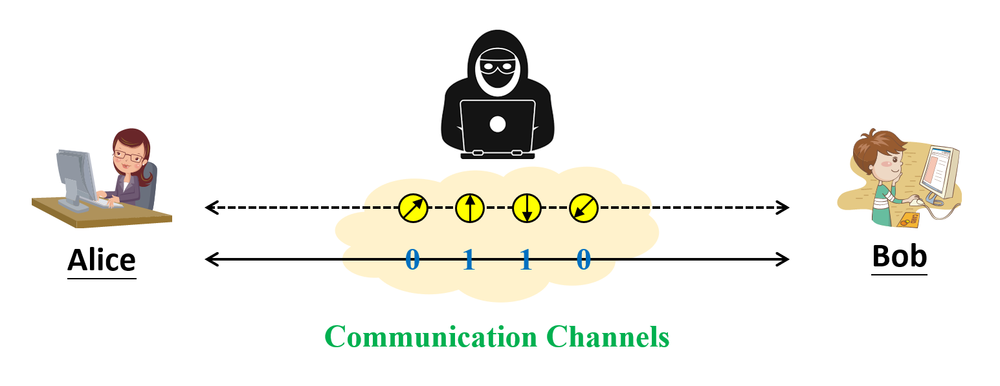
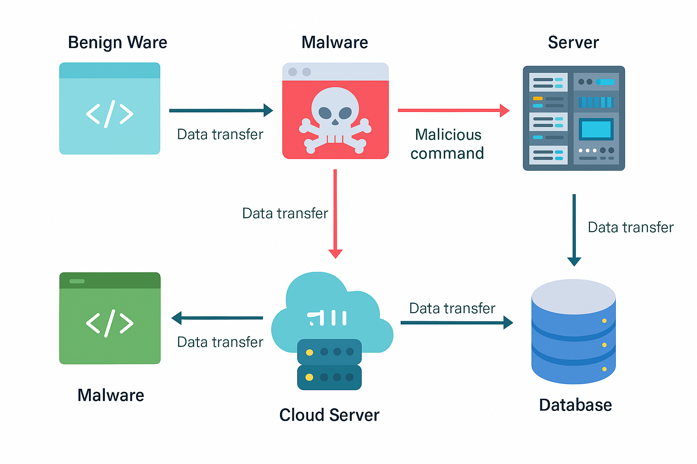

量子電腦（Quantum Computer）長久以來被視為會對未來科技發展產生革命性突破的計算工具，主要原因來自於量子資訊的同步處理特性，使得其運算能力比起傳統電腦來得更加有效率，能夠解決許多傳統電腦無法解決的計算難題。近幾年來，由於一些科技巨擘如 IBM、Google 和 Microsoft 等皆紛紛投入量子電腦的開發，使得量子計算逐漸從實驗室走向商業運轉。然而，如同當年傳統電腦的發展初期一樣，新科技的到來也同時導致許多新興的資訊安全議題。量子密碼學（Quantum Cryptography）是一門結合量子資訊以及傳統加解密技術的研究領域，旨在提出適用於量子通訊的安全協定。由於量子計算設備的成本昂貴，本實驗室目前致力於研究一種容易實現且較低成本的輕量級（Lightweight）量子網路環境，讓在此環境上所設計的安全協定都能夠直接轉換成與量子測量設備無關（Measurement-Device-Independent）的金鑰協議。

隨著網際網路與行動裝置的普及，文字、圖片、影像與音訊等多媒體資料已然成為現今社會中主流的資訊載體。然而，多媒體內容具有資料量龐大、冗餘度高與人眼對視覺變化敏感等特性，使得其在加密與驗證過程中面臨更多挑戰。若缺乏有效的防護機制，多媒體資料在傳輸或儲存時容易遭受未經授權的存取、竄改或者偽造，進而造成隱私洩漏與資訊可信度下降等風險。多媒體安全（Multimedia Security）是一門結合密碼學、訊號處理以及人類感知模型的跨領域研究，旨在設計兼具安全性與實用性的多媒體防護技術。本實驗室聚焦於開發具有視覺不可察覺性（Visually Imperceptibility）與灰階不變性（Grayscale Invariance）等特徵的影像加密與驗證演算法，期望在不影響影像品質的前提下，確保其在傳輸與儲存過程中的機密性（Confidentiality）與完整性（Integrity）。此外，我們亦針對低運算資源環境（如物聯網裝置、邊緣設備）進行演算法最佳化設計，並探索應用於智慧監控、醫療影像及數位著作權保護等場域的實際可行性，打造高效能且可信賴的多媒體安全防護機制。
隨著工業控制系統（Industrial Control Systems，ICS）廣泛部署於智慧製造與關鍵基礎設施，其韌體（Firmware）在操作流程與控制邏輯中扮演關鍵角色，也成為潛藏異常行為與惡意邏輯的高風險載體。本實驗室以 ICS 為核心研究場域，著重於韌體層級的控制行為分析與潛在威脅識別。透過逆向工程（Reverse Engineering）還原裝置指令序列、狀態轉換與資料交換流程，並結合靜態分析與動態行為觀測，以建構能捕捉可疑指令注入（Command Injection）、非預期控制邏輯與異常操作模式的行為模型。我們進一步運用機器學習與序列特徵建模技術，發展具判別能力以及可解釋性的異常偵測模型，提升對潛在惡意行為與系統偏移的辨識準確度。同時，考量 ICS 多部署於資源受限之邊緣環境（Edge Environment），本研究亦致力於設計可輕量化部署的方法，以及具即時性與高可靠度的異常診斷機制，強化整體 ICS 的安全性與韌性。
